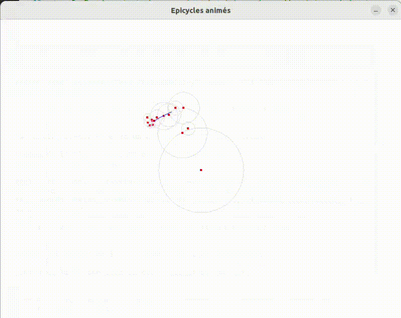
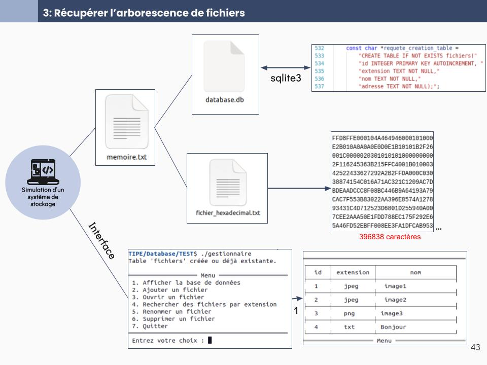

Engineering course
My path, my skills, and the technical projects I'm proud of.
My path
Three years of selective prep classes in Amiens (MP2I, followed by MPI* and a 5/2 year), focused on Mathematics and Computer Science, before joining ENSEEIHT (Toulouse INP).
What I'm studying now
First year of the Master's engineering degree in Computer Science and Telecommunications, with a strong focus on software engineering, data, and theoretical computer science.
- Ada: Learning a programming language designed for reliable, safety-critical systems.
- Rocq (formerly Coq): Formal program verification and writing interactive proofs using a proof assistant.
- Statistics & Probability: Modelling random phenomena, statistical estimation, and data analysis.
- Optimization: Finding optimal solutions under mathematical constraints.
Technical skills
TIPE: Curve Reconstruction with Fourier Epicycles
View on GitHub ↗
Problematic & Goal
How can complex shapes extracted from 2D images be approximated and animated continuously using discrete trigonometric series? The objective was to implement a full pipeline from raw image contour extraction to real-time visual simulation using complex Fourier coefficients.
How it works
- Contour Extraction: Implemented the Moore-Neighbor tracing algorithm in C to extract ordered boundary points from a binary image.
- Fourier Computation: Computed discrete Fourier coefficients on complex numbers representing the contour coordinates.
- Sorting & Optimization: Sorted epicycles by modulus magnitude so that major geometric shapes are drawn first before fine details.
- Real-Time Rendering: Animated rotating vectors and circles frame-by-frame using the SDL2 graphical library.
Technical Challenges & Solution
Managing dynamic memory allocation for arbitrary contour sizes in C required rigorous handling of realloc and boundary checking. Furthermore, ensuring smooth 60 FPS animation with hundreds of active rotating vectors was achieved by precomputing complex exponential vectors before the rendering loop.
Key Result & Outcome
Demonstrated that smooth contour derivatives guarantee exponential convergence without spatial artifacts, whereas discontinuous shapes exhibit the Gibbs phenomenon.
TIPE: File Recovery from Raw Storage
View on GitHub ↗
Problematic & Goal
When a file is "deleted" from an operating system, its physical data blocks often remain intact until overwritten. How can unindexed binary data blocks be identified and reassembled into coherent files without metadata assistance?
What I Built
- File System Simulator: Developed a functional storage manager in C using SQLite to handle directory indexing and allocation tables.
- Deletion Model: Simulated real-world file deletion mechanisms by removing directory metadata while keeping raw data sectors intact on virtual storage.
- Recovery Algorithm: Co-developed a scanning algorithm capable of parsing raw memory dumps, identifying file headers/footers (file carving), and reassembling orphaned data blocks.
Key Takeaway
This project provided deep practical insights into low-level computer architecture, binary memory dumps, database-driven file indexing, and data security persistence.